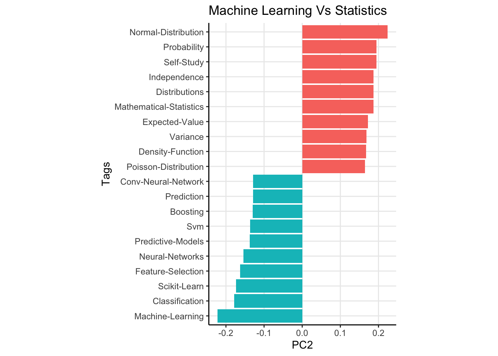
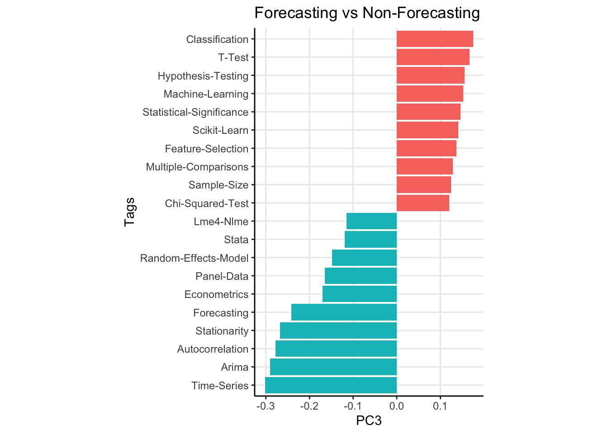
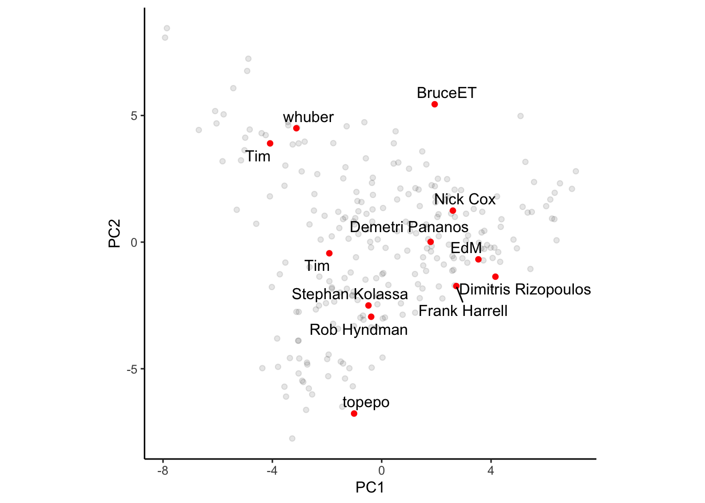
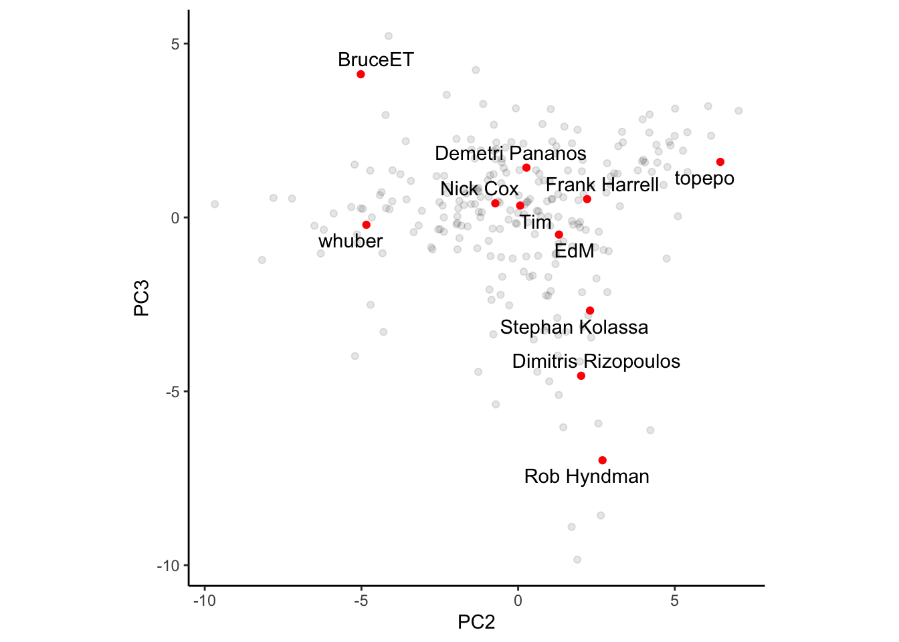

| Name | Tag | Percent |
|---|---|---|
| Demetri Pananos | Regression | 11.40% |
| Demetri Pananos | Hypothesis-Testing | 6.01% |
| Demetri Pananos | R | 5.90% |
| Demetri Pananos | Machine-Learning | 5.45% |
| Demetri Pananos | Logistic | 4.85% |
| Demetri Pananos | Bayesian | 3.58% |
| Demetri Pananos | Statistical-Significance | 3.42% |
| Demetri Pananos | Confidence-Interval | 2.75% |
| Demetri Pananos | T-Test | 2.64% |
| Demetri Pananos | Probability | 2.31% |
| Demetri Pananos | Generalized-Linear-Model | 2.31% |
Julia Silge gave a really good talk in 2018 about PCA ond tags on stack overflow. She was able to interpret some of the components to infer some subgroups of users of stack overflow (front-end vs back-end, are they a Microsoft tech developer or not, are you an android dev or not, etc). These principal components were able to shed some light on what drove the variation in questions asked.
I love this talk, and I crib it all the time. As of late, I’ve not been doing much SQL, so I figured I would recreate Julia’s analysis using data from cross validated. But this time, with a twist!
What if instead of understanding the drivers of variance in questions asked, we analyze the kinds of questions users answer. This could give us insight into the type of analysts we have on cross validated. The site is intended to be for statistical analysis, but it has a mix of prediction questions, machine learning questions, econometrics questions, and much more. Hang around there long enough and you will see some familiar faces (mine included) and you get a pretty good sense of who answers what kinds of questions.
I’m going to use data available from the stack exchange data explorer available here. I’ve included a code box in this post with the query I’ve used. I’ve sliced out the top 250 users as ranked by reputation and the top 100 tags as calculated by prevalence. We can use {tidymodels} to do a lot of the heay lifting. Let’s get to it.
Click to see SQL Query
with QA_Tags as (
select
A.Id as QuestionId,
A.Title as QuestionTitle,
A.Body as QuestionBody,
B.Id as AnswerId,
B.OwnerUserId,
B.Body as AnswerBody,
C.iD as UserId,
C.DisplayName,
dense_rank() over (order by C.Reputation desc) as rnk,
D.TagId,
E.TagName
from
--Extract Answers from Posts Table
(select * from Posts where PostTypeId = 2) as B
--Extract Questions from Posts Table
left join (select * from Posts where PostTypeId = 1) as A
on A.Id = B.ParentId
left join Users as C
on B.OwnerUserId = C.Id
left join PostTags as D
on A.Id = D.PostId
left join (select top 100 * from Tags where TagName is not NULL order by Count desc) as E
on D.TagId = E.Id)
select
rnk,
UserId,
DisplayName,
TagName,
count(distinct QuestionId) as N
from QA_tags
where rnk<=250
group by rnk, UserId, DisplayName, TagName
order by rnkData & Modelling
Let’s Take a peek at the data, using me as an example. Below are my top 10 tags as a percent of my total answers. Looks like I like to answer questions about regression, hypothesis testing, and R most frequently. Each of the top 250 users has data similar to this in my dataset. I need to pivot it so that tags become features. Then, I can normalize the data and perform PCA.
Checkout how dummy easy the analysis is with tidymodels. I think I spent more time cleaning the data than I did modelling it.
rec <- recipe(rnk + UserId + DisplayName ~ ., data = d) %>%
step_normalize(all_numeric_predictors()) %>%
step_pca(all_numeric_predictors(), num_comp = 3) %>%
prep()
prin_comps <- bake(rec, new_data = d)
weights <- rec %>%
tidy(number = 2, type = "coef")The last two lines extract both the principal components and the weights for each tag on each component. Now. we’re ready to make some plots.
Principal Components
The results for the first 3 principal componensts are shown below. I’ve shown the 20 most extreme components for clarity.
The first principal compnent has tags like “Anova”, “T-Test” and “SPSS” as heavily weighted positive, while “Machine Learning”, “Mathematical Statistics” and “Probability” are all weighted heavily negative (the direction of the weights doesn’t matter, it isn’t like one direction is better or worse). To me, I read this as “Beginner” vs “Advanced” answers. Questions with the former tags are usually from users who are maybe taking a stats class for the first time and are learning about the t test or Anova. The dead give away for this is the “SPSS” tag being weighted so heavily1. Looking at more weights verifies this, with the negative weights being associated with topics like “Neural Nets”, and “Maximum Likelihod” while the positive weights have tags like “Statistical Significance” and “Interpretation”.
Now remember, these components do not explain variance in questions. They explain variance in the question answers! So the first component is really about people who choose to answer simple versus complex topics. The second principal component has a fairly straightforward interpretation. This component explains variation between users who answer classical statistical questions versus those who opt to answer machine learning type questions. Lastly, the third principal component seems to be distinguishing users who answer forecasting type questions (see tags like “Arima”, “Time Series”, “Forecasting”, and “Econometrics”) versus non forecasting type questions.



I think what is more interesting is that we can plot some of the more popular users on the site using the principal components. In the first plot, I’ve scattered PC1 vs PC2. Left to right means advanced vs simple questions. It is no surpriuse to see whuber farther left and BruceET farther right. Whuber can answer most anything, and I feel like he often accepts the challenge of a complex answer, opting to comment on simpler questions. Bruce, on the other hand, will always answer a simple question very robustly. Top to bottom means machine learning vs classical stats. I’m not surprised to see Frank Harrell closer to the top, as he has appeared in many questions if not only to scold people for using accuracy as a metric. No surprise Topepo is on the top of this PC. Interestingly, I’m kind of near the origin, if not a bit right of it. Seems like I strike a good balance between ML and stats, but often opt to answer simpler questions.
Plotting PC1 vs PC3 shows a very predictable pattern. Users near the bottom are more forcasting types, so its no surprise that Rob Hyndman, Dimitris Rizopoulus (who does a lot of longitudinal work), and Stephan Kolassa are near the bottom. I’m near the top, I have no clue about any of that stuff to be honest.


Conclusion
There appear to be at least three dimensions about which analysts on cross validated can be placed. Analysts can either opt to answer easy or difficult questions, which lean classical statistics or machine learning, with additional focus on forecasting on non-forecasting problems. That’s a fairly useful interpretation of the first three principal components!
It could be fun to think about how best to use this information. Now that we know these three kinds of subgroups, could we use it to recommend users questions to answer? Its been the case that there is a large gap between questions and answers, so maybe this could be useful but also maybe not.
Footnotes
Because once you’ve taken a few stats courses, you know bette than to use SPSS.↩︎